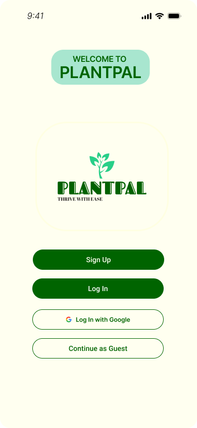
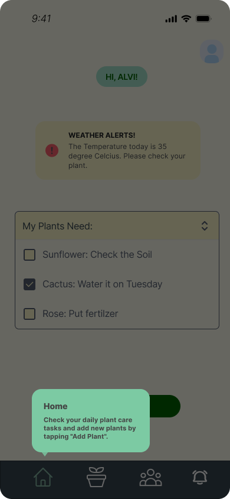
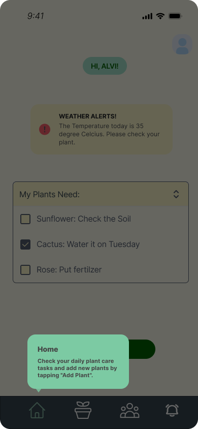
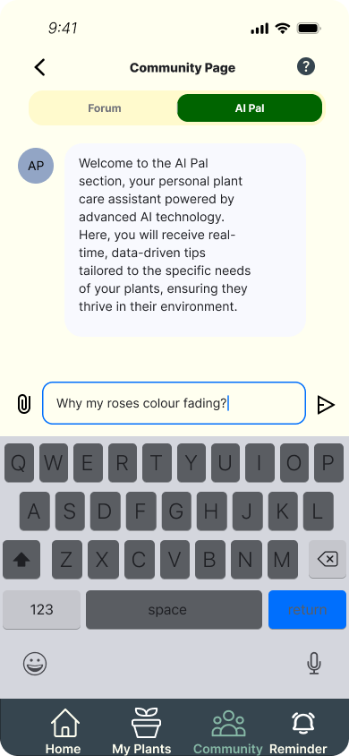
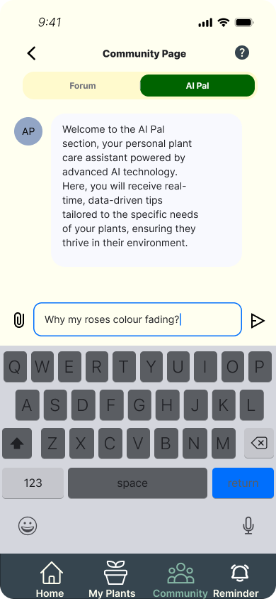
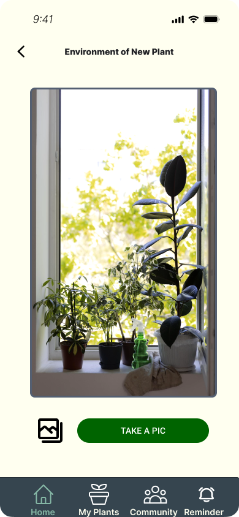
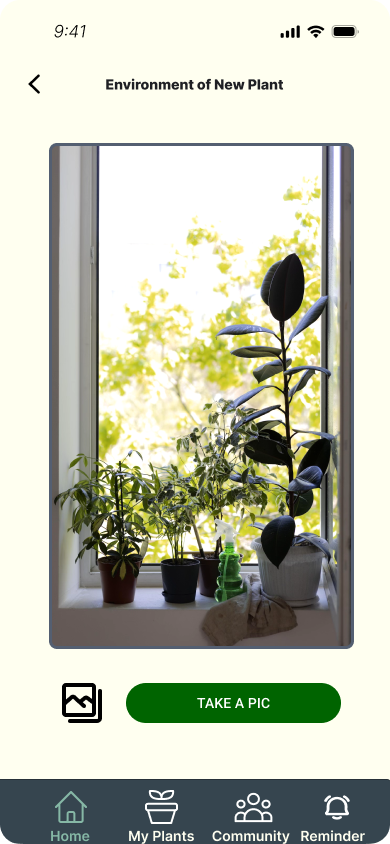
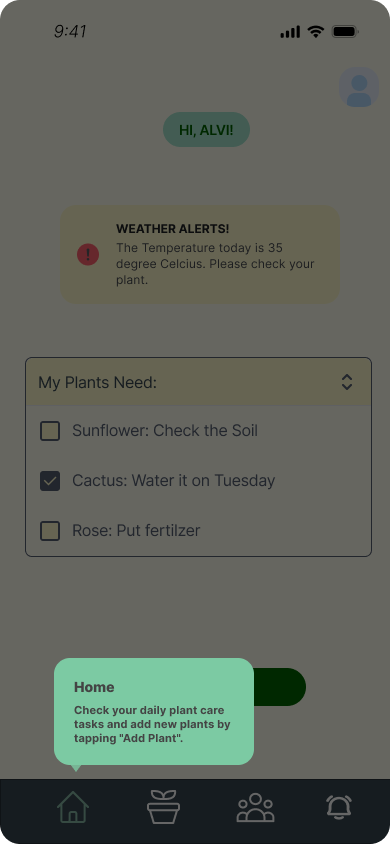
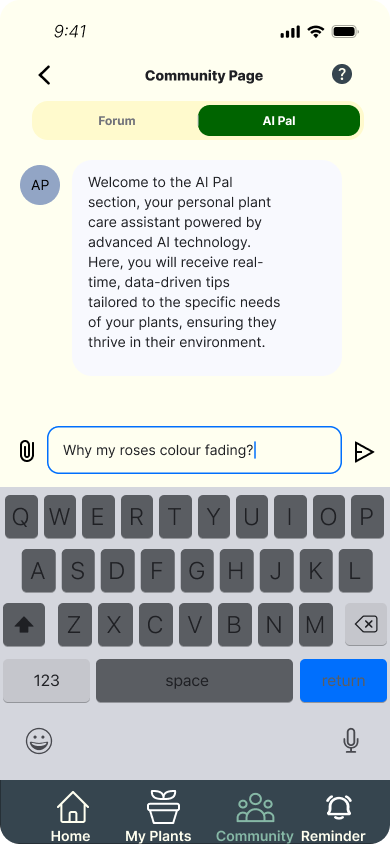
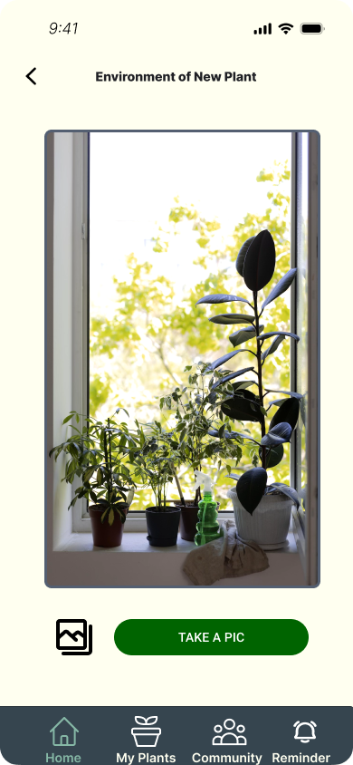

📌 PlantPal - iOS UI/UX Design (Personal Project)
Tools & Methods:
Figma, Maze Testing, Card Sorting, Heuristic Evaluation, Surveys
Overview:
PlantPal is an iOS prototype focusing on user-centered design to simplify plant care for users aged 18–34. It provides AI-driven suggestions, customized watering reminders, onboarding tutorials, and a community forum. This app was designed through iterative testing and feedback loops involving real users.
Key Features:
- AI-driven plant suggestions and reminders.
- Tutorial screens and Help buttons for new users.
- Community forum with styled interaction options.
- Navigation with active states and improved icon clarity.
- Content switchers refactored for local section updates only.
Responsibilities:
- Developed low-, medium-, and high-fidelity prototypes in Figma.
- Conducted surveys, card sorting, and usability testing.
- Applied heuristic evaluation findings to improve navigation and clarity.
- Refined user flow and visual layout across all app sections.
Challenges:
- Lack of onboarding support and confusing navigation in early iterations.
- Unclear icon functions causing frequent misclicks.
- Clunky content switching that reset full pages.
- Need for engaging but clean community feature interface.
Solutions:
- Implemented tutorial screens and labeled icons.
- Introduced consistent layout and active nav states.
- Refactored content switchers to only update visible components.
- Designed interactive and scalable forum UI layout.

 



 



 



